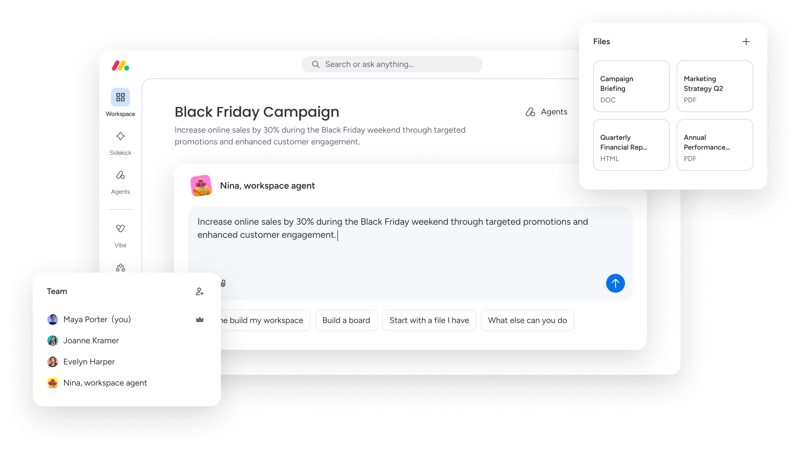
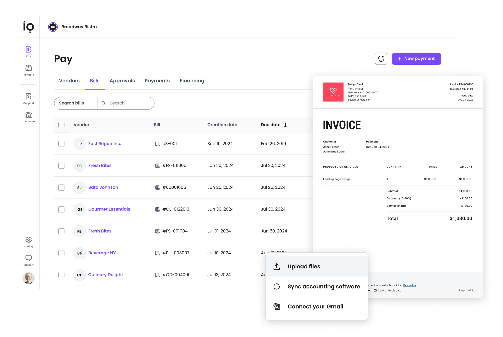
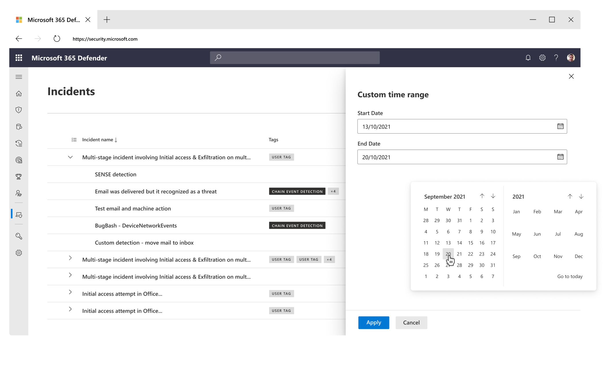
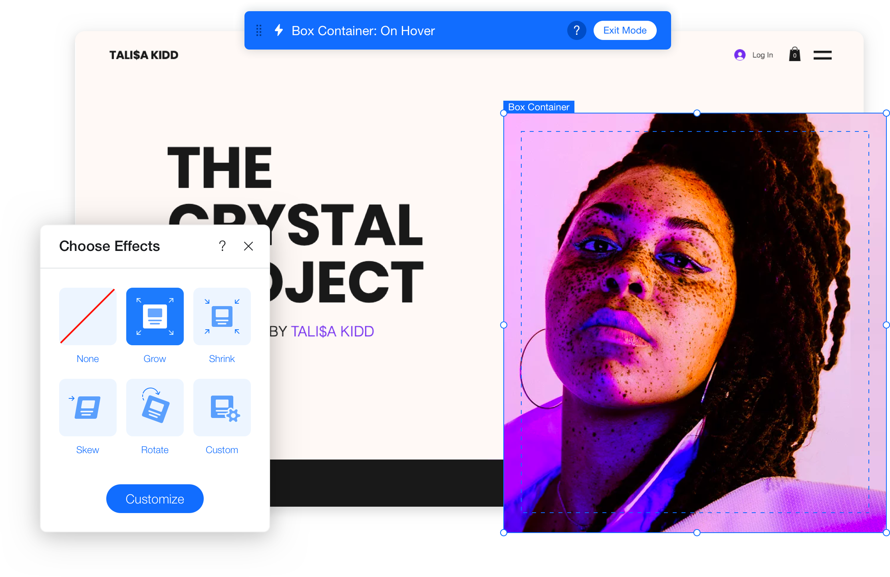
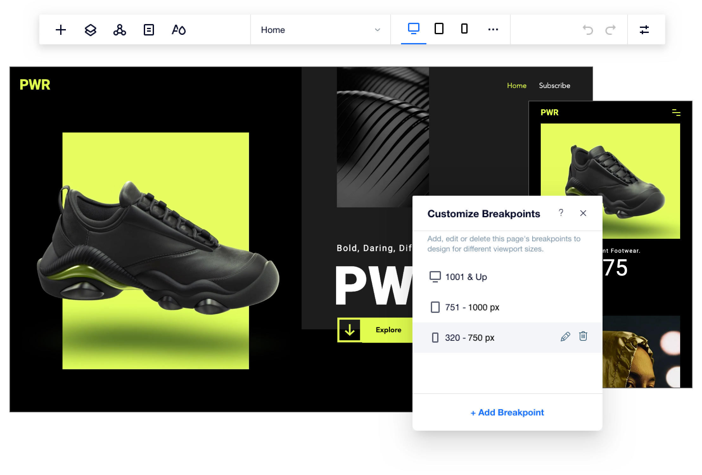
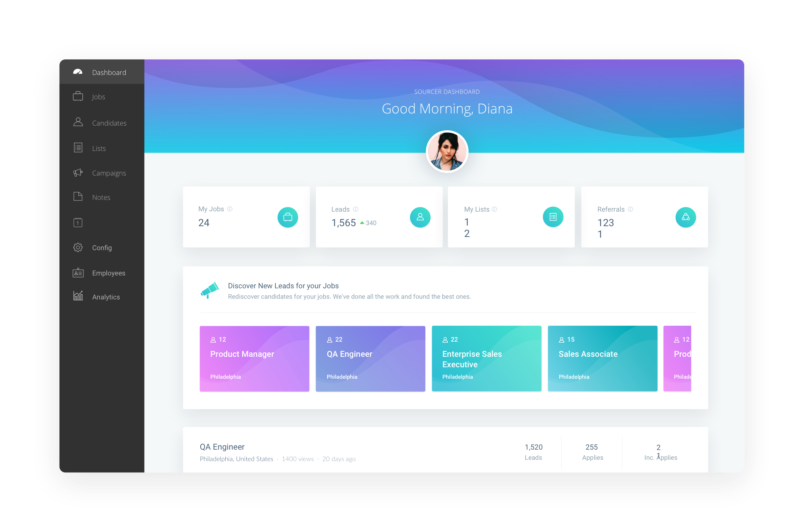
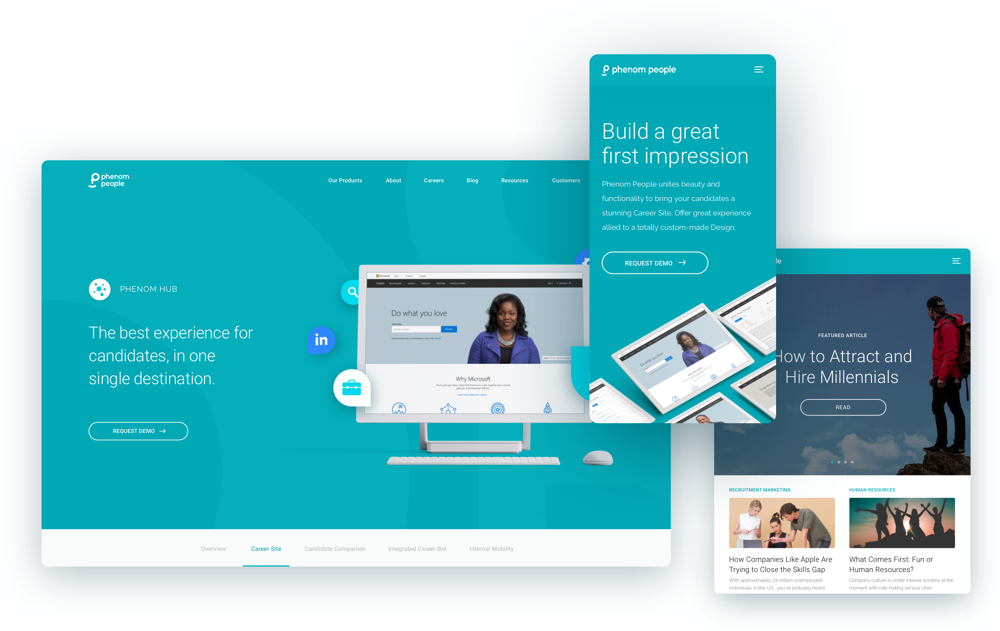
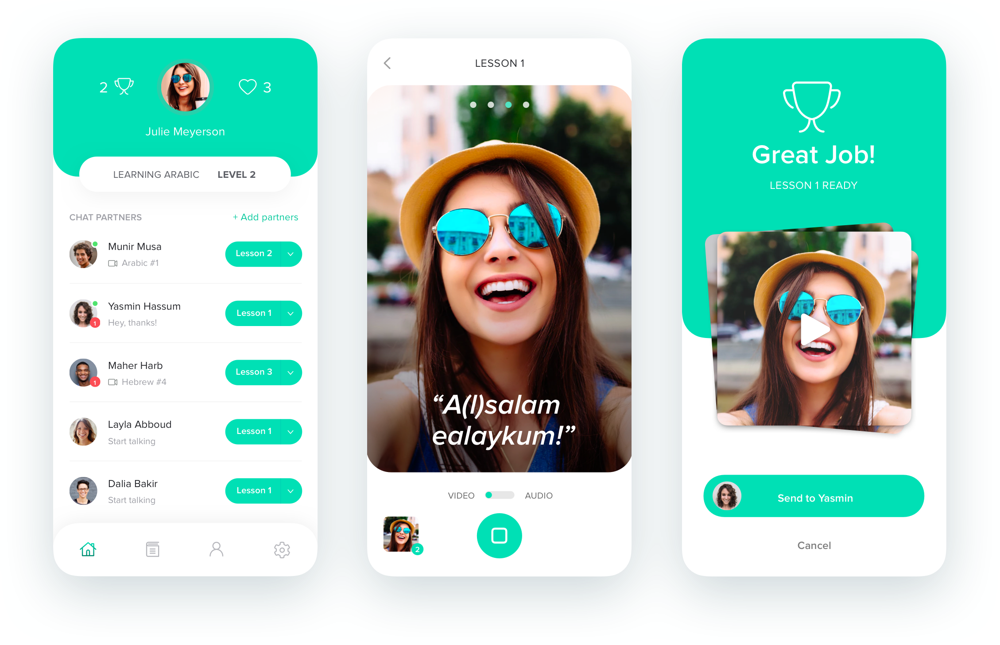
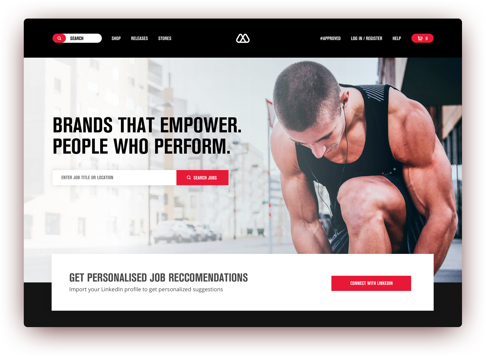

At monday.com, I set the design vision for agentic workspaces, pushing the boundaries of human-agent collaboration
While monday shifts from a work management tool to a full work execution platform, I direct the UX strategy for our core platform architecture. I lead the design of our workspace structures and redesigned navigation, building next-generation environments where teams and autonomous AI agents co-create, hand off context, and execute workflows.

I helped build Melio's payment platform for small businesses and accountants, focused on streamlining financial workflows.
I led end-to-end design for cross-cutting features like bulk bill payments, simplifying how users managed high volume transactions, along with accountant-facing flows including 1099 preparation and filing. I also mentored designers, drove cross-functional initiatives, and pushed for design quality across the org, delivering measurable value to both user experience and business outcomes.

I was part of the team behind Microsoft Defender for Endpoint, a global security platform that protects millions of devices against cyber threats worldwide
At Microsoft, I expanded my expertise in the enterprise security industry, solving intricate challenges and developing effective workflows for highly complex systems. In this role, I worked within a highly structured design system, delivering intuitive solutions for advanced cybersecurity problems while adhering to the platform's established user experience standards.

I led the redesign of the Wix Editor’s interface, the world’s leading DIY website-building platform, enhancing the experience for millions of users globally
At Wix, I led the redesign of the Wix Editor’s interface, a core component of the platform used by millions worldwide. As a key member of an exceptional design team, I drove innovative and impactful user experiences that elevated the Editor’s usability, enjoyment, and overall delight. My work also extended to several high-impact projects, including the development of new interaction controls, which significantly increased the use of interactions across websites built on the platform.

Additionally, I contributed to the development of Editor X, Wix's professional tool, focusing on breakpoints management and cascading styling
In early 2019, I collaborated with multiple Wix teams to develop Editor X, a revolutionary website-building tool. Editor X empowers designers to create responsive websites with flexible grids and complete breakpoint control. I contributed to design the logic and interface that enable people to intuitively create, manage and style a multi-breakpoint website.

I contributed to the design and development of Phenom People’s talent acquisition CRM platform, supporting companies in optimizing their talent acquisition processes
At Phenom People, I contributed to the development of Phenom Real-Time CRM, an innovative B2B platform that empowers talent acquisition teams worldwide to source, nurture, and make data-driven decisions. I played a pivotal role in creating new features, enhancing core workflows, and optimizing processes, significantly driving the product’s success.

I co-led the redesign of Phenom People's website, focusing on architectural scalability to support rapid growth
I was tasked with the challenge of redesigning Phenom People’s website from the ground up. I led the project closely, collaborating with the development team to implement a scalable design framework that supported architectural growth, allowed the introduction of new product pages, and enhanced content scalability.

As a conceptual side project I worked on a video messaging app focused on language learning and cultural exchange
One of my dedicated personal projects ia an app that facilitates language learning by connecting users with native speakers. During the concept development phase, I conducted user interviews with Hebrew and Arabic speakers to gain insights into their past learning experiences, goals, and pain points, ensuring the app addresses real user needs effectively.

As a UX/UI designer at Phenom, I worked on designing career websites for global companies, helping them enhance their employer branding and achieve their strategic goals
I collaborated with global enterprises on challenging projects, transforming their career websites into powerful front ends for employer branding and talent acquisition strategies. This intense period allowed me to develop advanced web design skills and learn from some of the most talented User Experience and Visual Designers in the field.
About me
Hi there! I’m Thiago Zeitune, a Brazilian-Israeli designer passionate about creating products that people love and use every day. I believe that well-designed products make life easier, more productive, and enjoyable.
Currently, I am a Product Design Lead at monday.com, where I push the boundaries of human-agent work collaboration. I lead product design for core features used by millions of people every day, setting design vision and strategy, shipping flagship experiences, mentoring designers, and partnering closely with engineering. I also contribute hands-on to front-end development with Cursor, Git, and React to bring ideas into production faster.
Before that, I was a Senior Product Designer at Melio, designing payment and workflow experiences for small businesses. Earlier, I worked at Microsoft on Microsoft 365 Defender, protecting millions of users worldwide, and at Wix, leading UX for Wix Blocks and contributing to the Wix Editor and Editor X. Earlier in my career, I worked at Phenom People, Aspire Global, and Studio Jeger.
My approach as a Product Designer is to put users’ needs and behaviors at the forefront of every development stage while aligning design with business strategy and goals. I thrive on collaborating with passionate teams on complex projects, constantly learning, and sharing new ideas and techniques.
In addition to my professional work, I recently launched my own UX course, successfully piloted with a small group of students. I hold a Master’s degree in Integrated Design from the Holon Institute of Technology (HIT) and a degree in Graphic Design from the Federal University of Rio de Janeiro, along with a UX certification from Create Future.
Outside of work, I enjoy playing music with my band and my kids 🎸🎶, playing volleyball, reading, and listening to podcasts. If you’re ever in Tel Aviv, feel free to reach out for a coffee ☕!